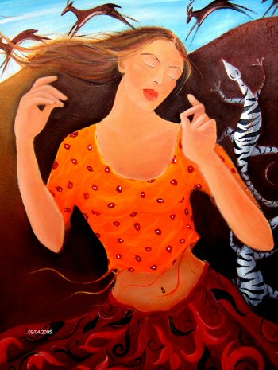

The Artist (Dancer, Musician, Actor, Author, Sculptor)
(30 x 36)
The intuitive artisan embodies the passion to express a dimension of life just beyond the five senses. The passion within is the driving force to proclaim the extraordinary. The lizards in the painting are sun seekers, striving to invigorate their souls. The gregarious Springbokkies (jumping gazelles) are known for their high leaps. The shadow Artist should guard against over indulgence and the insanity of genius.
This painting is available in alternative giclee print sizes.
Size A: 8 x 10
Size B: 11 x 14